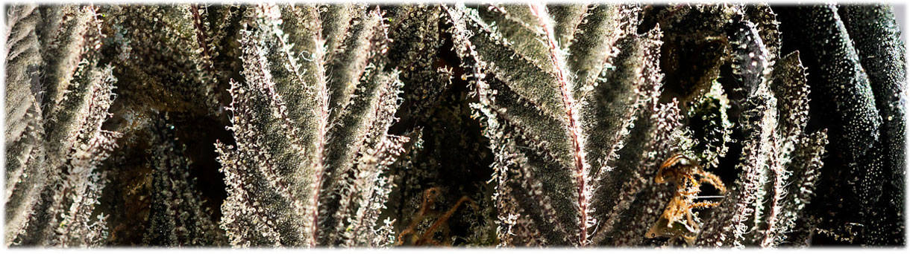
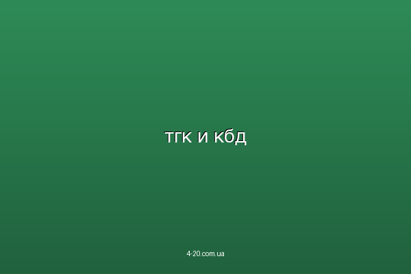

Двумя основными компонентами, составляющими структуру конопли, являются вещества: тетрагидроканнабинол (ТГК) и каннабидиол (КБД). Оба они относятся к классу каннабиноидов, однако их воздействие на человеческий организм диаметрально противоположно.
5 главных различий между ТГК и КБД
Эйфория vs Терапия
ТГК создает чувство эйфории и «хай» эффекта. Чем выше его уровень, тем мощнее психоактивное воздействие. КБД не вызывает опьянения и ценится за свой огромный лечебный потенциал.
Тревожность vs Спокойствие
ТГК у некоторых людей вызывает чувство паники или паранойю. КБД, напротив, работает как природный транквилизатор, выводя человека из состояний страха и тревоги.

Психозы vs Антипсихоз
ТГК при передозировке может вызвать психотические состояния. КБД обладает антипсихотическими свойствами и часто используется для коррекции психозов, вызванных ТГК.
Сон vs Энергия
ТГК способствует расслаблению и глубокому сну. КБД обладает более бодрящим эффектом и не может быть использован как полноценное снотворное.
Закон и Статус

ТГК строго запрещен в большинстве стран из-за своего наркотического действия. КБД часто легален или находится в «серой зоне», так как используется в медицине (например, препарат Epidiolex).
Интересный факт: В современных гибридных сортах часто стремятся сбалансировать уровень ТГК и КБД, чтобы получить мощный терапевтический эффект без избыточной тревожности и сильного «тумана» в голове.
🌿 Хотите узнать больше о ТГК?
Подробно разберитесь в химической формуле самого активного компонента конопли.
Узнать про ТГК